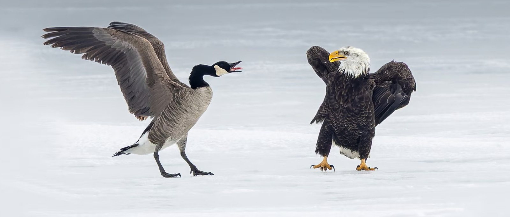

Top Stories头条20
- 1A runner died in the New York City Marathon. Have the risks changed as more people race?一名跑步者在纽约市马拉松比赛中死亡。随着越来越多的人参加比赛，风险是否发生了变化？
- 2The give and take (and partisan wrangling) in Alberta's urban-rural hybrid riding maps艾伯塔省城乡混合骑行地图中的给予和索取（以及党派争论）
- 3Canada looking to Germany for 8 submarines up front and 4 later: sources加拿大希望先向德国采购 8 艘潜艇，随后向德国采购 4 艘潜艇：消息人士
- 4UBC prof testifies she acted as a 'conduit' for sex assault allegations against Steven GallowayUBC 教授作证称，她充当了史蒂文·加洛韦性侵犯指控的“管道”
- 5A part of B.C. now observes the same time as a part of FloridaBC省的一部分现在与佛罗里达州的一部分时间相同
- 6B.C. privacy watchdog launches investigation into Crime Stoppers data breach公元前隐私监管机构对灭罪组织数据泄露展开调查
- 7P.E.I. Premier Rob Lantz facing pressure to step down爱德华王子岛州长罗布·兰茨面临下台压力
- 8Carney says U.S. 'asking less and offering more' with 'more intense' trade talks underway卡尼表示，随着“更加激烈”的贸易谈判正在进行，美国“要求更少，提供更多”
- 9PM, Manitoba premier only ones to bring up abolishing Indian Act at meeting: AFN chiefAFN主席：总理和曼尼托巴省总理在会议上提出废除《印度法案》
- 10New Alberta bill would compel ‘neutrality’ for post-secondary institutions on political issues新的艾伯塔省法案将迫使高等教育机构在政治问题上保持“中立”
- 11How a First Nation is pushing back against Canada's largest AI data centre原住民如何反击加拿大最大的人工智能数据中心
- 12Correction on our previous reporting on charges faced by Alberta hockey executive对我们之前关于艾伯塔省曲棍球高管面临指控的报道的更正
- 13Mother and daughter dead in suspected grizzly bear attack near Bella Coola, B.C.不列颠哥伦比亚省贝拉库拉附近，母女疑似灰熊袭击身亡
- 14Alberta to lawyer up if NDP challenges electoral boundary report: Smith如果新民主党挑战选举边界报告，阿尔伯塔省将请律师：史密斯
- 15Home in Amherstburg, Ont., unlivable after family spent $155K on renovations, police looking for contractor安省阿默斯特堡的家花费 15.5 万美元进行翻修后无法居住，警方正在寻找承包商
- 163.4 magnitude earthquake near Esterhazy, Sask., likely caused by mining, Natural Resources Canada says加拿大自然资源部表示，萨斯喀彻温省埃斯特哈齐附近发生 3.4 级地震，可能由采矿引起
- 17Prime Minister says Russia will not be allowed to compete at 2026 world juniors in Alberta总理表示俄罗斯将不会被允许参加在艾伯塔省举行的 2026 年世界青年锦标赛
- 18Fact check: Does this Ontario government ad show real miners?事实核查：安大略省政府的这则广告是否展示了真实的矿工？
- 19What the Republican midterm defeat means for Trump, the U.S. and Canada共和党中期失败对特朗普、美国和加拿大意味着什么
- 20Tax and tariff relief top small businesses' wish list for Budget 2026税收和关税减免是小企业 2026 年预算的首要愿望
Canada加拿大20
- 21Needing multiple streaming services to watch hockey a 'pain in the butt,' Winnipeg fans say温尼伯球迷表示，需要多个流媒体服务来观看曲棍球比赛“令人头疼”
- 22$100K penalty against X for not deleting intimate image reversedX 因未删除亲密图像而被罚款 10 万美元
- 23Military reservist accuses now-retired senior officer of sexual assault at 2023 Winnipeg work event预备役军人指控现已退休的高级军官在 2023 年温尼伯工作活动中实施性侵犯
- 24AI is making it harder for voters to get accurate information: Elections Canada chief加拿大选举委员会主席：人工智能使选民更难获得准确信息
- 25Auditor general issues damning report on Nunavut's family services, again审计长再次发布有关努勒维特家庭服务的严厉报告
- 26Young woman critically injured after 2nd dog attack in 3 days in Pelican Narrows, Sask.萨斯喀彻温省鹈鹕海峡，三天内第二次被狗袭击，一名年轻女子受重伤。
- 27Montreal police brotherhood to contest SPVM decision to fire 7 officers for misconduct蒙特利尔警察兄弟会对 SPVM 解雇 7 名不当行为警察的决定提出异议
- 28N.L.'s 1st Stanley Cup winner 'disappointed' namesake community centre in hometown could be renamed荷兰第一届斯坦利杯冠军“失望”，家乡的同名社区中心可能会更名
- 29Still no cause of death revealed for newborn whose remains found in Halifax woods in May5月份在哈利法克斯森林中发现的新生儿遗体仍未透露死因
- 30Police sergeant with history of misconduct accused of sexual harassment over 4 years有不当行为历史的警长被指控性骚扰超过4年
- 31Minister Calandra played behind-the-scenes role in OCDSB Pride parade controversy卡兰德拉部长在 OCDSB 骄傲游行争议中扮演幕后角色
- 32Fire breaks out in garage on Labrosse Boulevard in Gatineau加蒂诺拉布罗斯大道车库发生火灾
- 33$50M donation to new Civic campus lands amid uncertainty over project's total cost在项目总成本不确定的情况下，向新的 Civic 园区土地捐赠 5000 万美元
- 34Ontario won't make career college OSAP audit public, minister says部长表示，安大略省不会公开职业学院 OSAP 审计
- 35Where to watch the U.S. midterm elections in Ottawa在渥太华哪里可以观看美国中期选举
- 36Conservatives call for probe of friendship between Carney and Telesat CEO保守党呼吁调查卡尼和Telesat首席执行官之间的友谊
- 37Quebec may face future energy deficits, need to import electricity from U.S., other provinces魁北克未来可能面临能源短缺，需要从美国和其他省份进口电力
- 38Architects offer look inside Ādisōke as Ottawa's new library takes shape渥太华新图书馆初具规模，建筑师们展示 Ādisōke 内部
- 39Fire rages overnight on rue Saint-Louis in Gatineau加蒂诺圣路易斯街一夜之间发生火灾
- 40Minister's office says city has ‘important role to play’ in evolving Ottawa hospital cost部长办公室表示，渥太华市在不断变化的医院成本中可以发挥“重要作用”
Toronto多伦多20
- 41Clarington's new mayor will serve with a councillor charged for allegedly threatening him克拉林顿的新市长将与一名因涉嫌威胁他而被指控的议员一起任职
- 42Specialty food bank that caters to Durham Region residents looking for home indoors专门为达勒姆地区寻找室内住宅的居民提供食物银行
- 43Arrests made in protests of Bloor Street bike lane removal intended to quell dissent, lawyers allege律师称，在布鲁尔街自行车道拆除抗议活动中被捕，旨在平息异议
- 44Road worker dead after being struck by dump truck in Pickering: police皮克林道路工人被自卸卡车撞死：警方
- 45Toronto hoping to negotiate new deal with Ontario amid financial uncertainty多伦多希望在金融不确定性的情况下与安大略省谈判新协议
- 46Man dead, SIU investigating after incident at U of T Mississauga: police多伦多大学密西沙加分校事件发生后，男子死亡，SIU正在调查：警方
- 47Hundreds of food delivery drivers protest downtown to demand dignity, fair pay from companies数百名送餐司机在市中心抗议，要求公司给予尊严和公平报酬
- 48A Halloween festival drew thousands to Church-Wellesley Village. Some advocates say safety was a concern万圣节节日吸引了数千人来到教堂韦尔斯利村。一些倡导者表示，安全是一个问题
- 49Canadian dentist detained by ICE in Minnesota released after federal court ruling联邦法院裁决后，被明尼苏达州 ICE 拘留的加拿大牙医获释
- 50Police chief says 'no failure' after man later deemed Bridle Path home invasion suspect let go from hospital男子后来被认为是Bridle Path入室盗窃嫌疑人从医院释放后，警察局长表示“没有失败”
- 51SIU investigating after 14-year-old 'seriously injured' during arrest at TTC station14岁少年在TTC车站被捕期间“严重受伤”，SIU正在调查
- 52Inside man or scapegoat? Defence, prosecutors make closing submissions in Pearson airport gold heist trial内部人还是替罪羊？辩方和检察官在皮尔逊机场黄金抢劫案审判中提出结案陈词
- 53Finding a specialist can take so long, some Ontario doctors are turning to social media: OMA寻找专家可能需要很长时间，一些安大略省的医生正在转向社交媒体：OMA
- 54Ministry alleges thousands of OSAP applications came from single IP address部委称数千个 OSAP 申请来自同一个 IP 地址
- 55Why Mississauga, Brampton residents should care about the U.S. midterms为什么密西沙加和宾顿居民应该关心美国中期选举
- 56What you need to know about this year's flu season in Ontario关于安大略省今年流感季节您需要了解的信息
- 57How Michael Garron Hospital is preparing the next generation of health-care workers迈克尔加伦医院如何培养下一代医护人员
- 58Ford government's OSAP freeze 'ruined my life,' says Niagara student living in a shelter住在庇护所的尼亚加拉学生说，福特政府的 OSAP 冻结“毁了我的生活”
- 59What 'cost us $1,000 ... is now $2,000': Hamilton farmer takes stock of future as fuel, equipment costs rise“原来的 1,000 美元......现在是 2,000 美元”：随着燃料、设备成本上升，汉密尔顿农民对未来进行盘点
- 60New Hamilton public art bearing moccasin designs unveiled for Treaties Recognition Week汉密尔顿新公共艺术莫卡辛设计在条约表彰周上亮相
Burlington & Oakville伯灵顿·奥克维尔15
- 61Canada White squad whips Sweden 7-2 at U17 World Challenge in Oakville加拿大白队在奥克维尔举行的 U17 世界挑战赛上以 7-2 击败瑞典队
- 62Burlington groups invite residents to swap gently used clothing and toys伯灵顿团体邀请居民交换用过的衣服和玩具
- 63Residents looking for some festive fun have plenty they can do in Oakville over the next 2 months未来两个月，想要享受节日乐趣的居民可以在奥克维尔做很多事情
- 64Famous actress spotted at Oakville Drive-in; blog praises local theatre著名女演员现身奥克维尔汽车影院；博客赞扬当地剧院
- 652026 Oakville’s 78th Santa Claus Parade announces theme and visitor's guide2026 年奥克维尔第 78 届圣诞老人游行公布主题和游客指南
- 66Spotlight: A new home, a renewed mission: St. Paul's opens its doors to Oakville聚焦：新家，新使命：圣保罗向奥克维尔敞开大门
- 67Coffee sleeve initiative aims to brew conversations about domestic violence across Halton咖啡套倡议旨在在荷顿地区引发有关家庭暴力的对话
- 68Every Table Has a Story: Burlington’s Christmas Market Brings Community Together每张桌子都有一个故事：伯灵顿的圣诞市场将社区聚集在一起
- 69Spotlight: Building housing solutions together: Halton community invited to National Housing Day聚焦：共同构建住房解决方案：荷顿社区受邀参加全国住房日
- 70Halton District School Board is accepting applications for four specialty high school programs until Nov. 30荷顿区教育局将在 11 月 30 日之前接受四个特色高中项目的申请
- 71Halton highway closures for planned roadwork on Nov. 3Halton 高速公路因计划于 11 月 3 日进行道路施工而封闭
- 72Burlington's Joe Apps Technology Support Marks 10 Years, Looks Ahead to an AI-Driven FutureBurlington 的 Joe Apps 技术支持纪念 10 周年，展望人工智能驱动的未来
- 73Bird flu detected in a Halton backyard poultry flock. Public health says the risk to humans is very low.荷顿后院的一个家禽群中发现了禽流感。公共卫生部门表示，对人类的风险非常低。
- 74Burlington releases details for Remembrance Day services at Spencer Smith Park and Veteran Square伯灵顿发布了斯宾塞·史密斯公园和退伍军人广场的阵亡将士纪念日服务的详细信息
- 75Opening game of Oakville's U17 World Hockey Challenge nearly sells out奥克维尔 U17 世界曲棍球挑战赛开幕赛门票几乎售罄
World国际16
- 76Parts of small plane that crashed in South Florida found as far as 6 km from where it came down在南佛罗里达州坠毁的小型飞机残骸在距坠落地点 6 公里处被发现
- 77Dancing with the Stars 'shock' as fan favourite sent packing与星共舞“震惊”粉丝最爱的人被送走
- 78Vivienne Jolie drops dad Brad Pitt's last name, following 3 other siblings薇薇安·朱莉 (Vivienne Jolie) 放弃了父亲布拉德·皮特 (Brad Pitt) 的姓氏，追随另外 3 个兄弟姐妹的姓氏
- 79Trump claims U.S. will halt $4B US funding to Israel at end of 2026, as midterms underway特朗普声称，随着中期选举的进行，美国将在 2026 年底停止向以色列提供 40 亿美元资金
- 80String of bomb threats on flights, cruise ship disrupt travel across Europe航班和游轮上的一系列炸弹威胁扰乱了欧洲旅行
- 81Dozens still missing in Russian, guided-bomb attack that killed more than 30 in southern Ukraine俄罗斯制导炸弹袭击在乌克兰南部造成30多人死亡，仍有数十人失踪
- 82Putin pushes the myth of Russian invincibility, seemingly to set his terms for peace普京宣扬俄罗斯不可战胜的神话，似乎是为了设定和平条件
- 83Ryan Wedding's $40M US motorbike collection to go up for auctionRyan Wedding 价值 4000 万美元的美国摩托车收藏将进行拍卖
- 84Finland says its national teams won't play against Russia in hockey tournaments芬兰表示其国家队不会在曲棍球锦标赛中对阵俄罗斯
- 85Experts suggest Canada lock in gains with EU amid 'associate member' confusion专家建议加拿大在“准成员”混乱中锁定与欧盟的利益
- 86U.S. Supreme Court rejects Trump administration's bid to set aside California mail ballots美国最高法院驳回特朗普政府搁置加州邮寄选票的请求
- 87Another cyberattack on supermarket fridges sweeps Europe, leaving food spoiled超市冰箱再次遭受网络攻击席卷欧洲，导致食物变质
- 88Couple, 2 children and a 20-year-old pilot among 9 dead in Florida crash佛罗里达州坠机事故造成 9 人死亡，包括夫妇、2 个孩子和一名 20 岁飞行员
- 89Russian bomb attack on aid centre in southern Ukraine kills 26, officials say官员称，俄罗斯对乌克兰南部援助中心的炸弹袭击造成26人死亡
- 90Scientists ‘blown away’ seeing bleached corals fully recover科学家们看到白化珊瑚完全恢复“震惊”
- 91They hate both U.S. parties. They could swing the midterms他们讨厌美国两党。他们可以改变中期选举
Politics政治14
- 92No catastrophic financial hit required to fight climate change, scientists say in landmark court case科学家在具有里程碑意义的法庭案件中表示，应对气候变化不需要灾难性的经济打击
- 93How to follow CBC's federal budget coverage如何关注 CBC 的联邦预算覆盖范围
- 9424 hours in Antigua: Mark Carney's priorities at this year's Commonwealth summit安提瓜 24 小时：马克·卡尼今年英联邦峰会的优先事项
- 95Privacy watchdog urges Senate to further amend Liberals' controversial lawful access bill隐私监管机构敦促参议院进一步修改自由党有争议的合法访问法案
- 96Quebec man accused of threatening PM Mark Carney found not criminally responsible被指控威胁总理马克·卡尼的魁北克男子不负刑事责任
- 97Can the Carney government's second budget help put Canada on a path to net zero?卡尼政府的第二份预算能否帮助加拿大走上净零排放之路？
- 98Canada's next budget to be unveiled this week amid U.S. trade war, economic uncertainty在美国贸易战和经济不确定性的背景下，加拿大下一份预算将于本周公布
- 99Commonwealth secretary general pitches group as 'alternative' to U.S. trade英联邦秘书长将集团视为美国贸易的“替代品”
- 100Carney has 'good conversation' with Trump on future of Canada-U.S. trade as midterms near随着中期选举临近，卡尼与特朗普就加美贸易的未来进行了“良好对话”
- 101Carney calls December byelections for 6 ridings in Ontario, Quebec and Saskatchewan卡尼呼吁12月在安大略省、魁北克省和萨斯喀彻温省进行6个选区的补选
- 102Tombstones pop on Parliament Hill at Halloween rally over pesticide regulations万圣节集会上，国会山墓碑因农药法规而突然出现
- 103Canada is in the U.S. midterm spotlight. Will the results be a blessing or a curse?加拿大是美国中期选举的焦点。结果是祝福还是诅咒？
- 104Carney says, unequivocally, Canada seeking to become the EU's 1st associate member卡尼明确表示，加拿大寻求成为欧盟第一个准成员
- 105U.S. midterms: Democrats take control of Congress as voters hand Trump major loss美国中期选举：选民让特朗普惨败，民主党控制国会
Business财经17
- 106Canadian pension funds and U.S. company Blackstone invest $3.1B US in LNG Canada stake加拿大养老基金和美国公司 Blackstone 投资 3.1B 美元购买 LNG Canada 股份
- 107Snapchat reaches settlement in case after teens allege platform designed to be addictive青少年指控 Snapchat 平台旨在让人上瘾后，Snapchat 达成和解
- 108Economic frustration set to boil over in U.S. midterm elections经济挫败感将在美国中期选举中爆发
- 109Binance says billions replaced from hack that FBI blames on North Korea币安称 FBI 归咎于朝鲜的黑客攻击导致数十亿美元损失
- 110North American stocks sink, Wall Street suffers worst day since June amid tech sell-off北美股市下挫，华尔街因科技股抛售而遭遇六月以来最糟糕的一天
- 111Canadian economy stalled in August, points to September decline: StatsCan加拿大统计局：加拿大经济8月陷入停滞，9月将出现下滑
- 112Binance says $6.3B US hacked in what could be largest cryptocurrency theft ever币安称美国 6.3B 美元遭到黑客攻击，这可能是有史以来最大的加密货币盗窃案
- 113Canada to invest up to $1.6B in Toronto-based AI company Cohere加拿大将向多伦多人工智能公司 Cohere 投资高达 $1.6B
- 114Rogers hit with $15M fine over 'deceptive' marketing of 'Infinite' phone plan罗杰斯因“无限”手机计划的“欺骗性”营销而被罚款 1500 万美元
- 115Joly says she'll meet with Stelco owner if company gives 'concrete' plan to bring workers back乔莉表示，如果公司给出让工人重返岗位的“具体”计划，她将与 Stelco 老板会面
- 116BMO, CIBC, RBC, TD Bank block personal AI agents, citing safety and securityBMO、CIBC、RBC、TD Bank 以安全为由封锁个人人工智能代理
- 117DoorDash to buy rival Instacart for $17B US as it bets on grocery deliveryDoorDash 将以 17B 美元收购竞争对手 Instacart，押注杂货配送
- 118Higher mortgage costs set to depress already 'bleak' housing market抵押贷款成本上升将抑制本已“惨淡”的房地产市场
- 11946% of Canadian CEOs eyeing AI-driven growth with smaller staff, poll shows民意调查显示，46% 的加拿大首席执行官希望以更少的员工规模实现人工智能驱动的增长
- 120Smaller airlines ask Transport Canada for pilots' shifts to last up to 14 hours小型航空公司要求加拿大运输部允许飞行员轮班时间最长为 14 小时
- 121Cleveland-Cliffs says Stelco in 'full compliance' with commitments to Ottawa, wants to meet with Joly克利夫兰克里夫斯表示，Stelco“完全遵守”对渥太华的承诺，希望与乔利会面
- 122Bank of Canada governor says rate hike to 2.5% was needed in face of persistent inflation加拿大央行行长称面对持续通胀需要加息至2.5%
Science & Tech科技19
- 123Millions of fish died at an Ontario nuclear plant in 2025. Now its operator faces federal charges2025 年，安大略省一座核电站导致数百万条鱼死亡。现在其运营商面临联邦指控
- 124How a high school science teacher stumbled upon the 1st known T. Rex trackway一名高中科学老师如何偶然发现第一条已知的霸王龙轨道
- 125Chemist who transformed energy storage nabs Canada’s top science prize改变能源存储的化学家获得加拿大最高科学奖
- 126N.B. exploring new way to address moose collisions注意：探索解决驼鹿碰撞问题的新方法
- 127Canada shelves pledge to phase out captivity of elephants and great apes加拿大货架承诺逐步停止圈养大象和类人猿
- 128B.C. monitoring for avian flu amid rising reports of dying wild birds公元前野生鸟类死亡报告不断增加，监测禽流感
- 129How to tell whether your lithium batteries are a fire risk — and what to do if they are如何判断您的锂电池是否存在火灾风险，以及如果存在火灾风险该怎么办
- 130Bat boxes were supposed to be a safe haven for bats. So why are they killing them?蝙蝠箱应该是蝙蝠的避风港。那么他们为什么要杀掉他们呢？
- 131Entangled right whale spotted in Gulf of St. Lawrence圣劳伦斯湾发现被缠住的露脊鲸
- 132How going to space ages astronaut bones, and more…进入太空如何使宇航员的骨骼老化，等等……
- 133A spacewalk to remember: Canadian astronaut Joshua Kutryk says seeing Earth 'changed' him一次难忘的太空行走：加拿大宇航员约书亚·库特里克说看到地球“改变了”他
- 134Parts of Dundas Valley Conservation Area to close for Haudenosaunee deer harvest登打士谷保护区部分地区将关闭以进行豪德诺索尼鹿捕猎
- 135Dead humpback whale that was struck by ferry towed to First Nation for ceremony被渡轮撞到的座头鲸尸体被拖到原住民举行仪式
- 136Why did fall leaves hang on longer this year in Sask.?为什么今年萨斯喀彻温省的秋叶留得更长？
- 137Wind turbines have scary impacts on bats. Here's what can be done风力涡轮机对蝙蝠有可怕的影响。这是可以做的
- 138Alberta-made low-tech tractor getting attention worldwide艾伯塔省制造的低技术拖拉机受到全世界关注
- 139Canadian astronaut Joshua Kutryk conducts his 1st spacewalk加拿大宇航员约书亚·库特里克进行了他的第一次太空行走
- 140Facing an uncertain future, P.E.I.'s oyster farmers and processors close down for the season面对不确定的未来，爱德华王子岛的牡蛎养殖户和加工商关闭了本季
- 141Meet this museum’s flesh-eating clean-up crew来认识一下这个博物馆的食肉清理人员
Health健康18
- 142Ottawa wants us all to have emergency supplies for 3 days. The good news is, that number hasn't changed渥太华希望我们所有人都拥有三天的应急物资。好消息是，这个数字没有改变
- 143Cheap version of HIV-prevention shot raising hope in low-income countries廉价版艾滋病预防疫苗为低收入国家带来希望
- 144U.S. records 1st human bird flu death since last year美国记录去年以来首例人类禽流感死亡病例
- 145Researchers cooking up healthier options for Sask. sports centres研究人员为萨斯喀彻温省制定了更健康的选择。体育中心
- 146'We often try suicide': The hidden cost of problem gambling in Canada“我们经常尝试自杀”：加拿大赌博问题的隐性成本
- 147Medical oncologist based in Brandon says he's leaving his 'dream job' over lack of support布兰登的肿瘤内科医生表示，由于缺乏支持，他将辞去“梦想的工作”
- 148'No one is safe' as Ebola outbreak surges to more than 10,000 cases, Africa's top doctor warns Canada非洲顶级医生警告加拿大，埃博拉疫情激增至一万多例，“没有人是安全的”
- 149Some Alberta pharmacists say they’re having trouble getting enough stock of COVID-19 vaccines一些艾伯塔省药剂师表示，他们很难获得足够的 COVID-19 疫苗库存
- 150Experts, Liberal MP hope for full ban on sports betting ads as advocates cite mental health decline专家和自由党议员希望全面禁止体育博彩广告，因为倡导者指出心理健康状况下降
- 151More Canadian provinces are ending time changes. What does it mean for your health?更多加拿大省份正在结束时间变更。这对您的健康意味着什么？
- 152Calgary-developed wound treatment used on battlefields in Ukraine卡尔加里开发的伤口治疗方法在乌克兰战场上使用
- 153Deaths associated with wildfire smoke up about 275% in Canada, new report says新报告称，加拿大因野火烟雾导致的死亡人数增加了约 275%
- 154Ebola cases top 10,000 in Democratic Republic of Congo, as countries race to stop spread刚果民主共和国埃博拉病例突破 10,000 例，各国竞相阻止传播
- 155Everyone’s going on — and off — GLP-1s. What’s that doing to your health?每个人都在使用和关闭 GLP-1。这对您的健康有什么影响？
- 156Ottawa tables new MAID legislation, excluding people suffering solely from mental illness渥太华制定新的 MAID 立法，将仅患有精神疾病的人排除在外
- 157Nigeria Ebola patient flown to Switzerland, Congo health worker killed as 4 countries deal with outbreak尼日利亚埃博拉患者飞往瑞士，刚果卫生工作者在四个国家应对疫情时丧生
- 158More than 511,000 Ontarians connected to family doctors since 2025: health minister卫生部长：自 2025 年以来，已有超过 511,000 名安省人与家庭医生建立了联系
- 159What is Lewy body dementia?什么是路易体痴呆？
Arts文艺18
- 160Paris Jackson asks court to move $600M US from Michael Jackson estate into family trust帕丽斯·杰克逊 (Paris Jackson) 请求法院将迈克尔·杰克逊遗产中的 6 亿美元转移至家族信托
- 161Canadians Paul Anka, David Foster to receive Kennedy Center honours next month加拿大人保罗·安卡和大卫·福斯特下个月将获得肯尼迪中心荣誉
- 162Nathan Fielder lookalike contest coming to Toronto this month内森·菲尔德相似比赛将于本月在多伦多举行
- 163Martha Stewart says she 'really screwed up' after posting homeless Halloween costume玛莎·斯图尔特表示，在发布无家可归者万圣节服装后，她“真的搞砸了”
- 164Hudson Williams talks tattoos, sex scenes, Connor Storrie with neurodivergent interviewers in The Assembly S2哈德森·威廉姆斯 (Hudson Williams) 在《The Assembly》第 2 季中与神经不同的采访者谈论纹身、性爱场面和康纳·斯托里 (Connor Storrie)
- 165Heat director Michael Mann sustained 'superficial injury' at gun range, says representative代表称，热火总监迈克尔·曼在射击场受“表面损伤”
- 166Roles for trans and non-binary characters are vanishing, actors and experts warn演员和专家警告说，跨性别者和非二元角色的角色正在消失
- 167Why musicians are touring less and expecting fans to come to them为什么音乐家减少巡演并期待粉丝来找他们
- 168Some Backstreet Boys fans consider refund after Live Nation relocates them to cheaper, still-obstructed seatsLive Nation 将一些后街男孩的粉丝重新安排到更便宜、仍然受阻的座位后，他们考虑退款
- 169Dune 3 popcorn buckets are even more unhinged than the original沙丘 3 爆米花桶比原来的更疯狂
- 170IN PHOTOS | Celebrity Halloween costumes to inspire your spooky season照片 |名人万圣节服装为你的幽灵季节带来灵感
- 171Ian McKellen calls lifelong friend Patrick Stewart the 'most respected and beloved actor,' in moving tribute伊恩·麦克莱恩 (Ian McKellen) 在感人至深的致敬中称终生好友帕特里克·斯图尔特 (Patrick Stewart) 为“最受尊敬和喜爱的演员”
- 1725 unforgettable Patrick Stewart performances as Jean-Luc Picard帕特里克·斯图尔特 (Patrick Stewart) 饰演让-吕克·皮卡德 (Jean-Luc Picard) 的 5 场令人难忘的表演
- 173Apple TV's Nocturne is Nordic noir by the numbers从数字来看，Apple TV 的《Nocturne》是北欧黑色电影
- 174Star Trek actor Patrick Stewart dead at 86《星际迷航》演员帕特里克·斯图尔特去世，享年 86 岁
- 175You can see You Can See Everything everywhere你可以看到到处都可以看到一切
- 176New Call of Duty game under fire for using footage of deadly 2022 South Korea crowd crush新《使命召唤》游戏因使用 2022 年韩国人群拥挤的致命镜头而受到批评
- 177Bryan Adams takes aim at Lake Ontario name change in new song布莱恩·亚当斯在新歌中瞄准安大略湖更名
Sports体育23
- 178Canadian Sarah Fillier expected to play at world championship加拿大人莎拉·菲利尔有望参加世界锦标赛
- 179Alphonso Davies returns to Canada's men's soccer team vs. Guatemala阿方索·戴维斯重返加拿大男子足球队对阵危地马拉队
- 180Tennis legend Nadal on fatherhood, playing Vegas and possible exhibition with Federer网球传奇人物纳达尔谈父亲身份、参加维加斯比赛以及可能与费德勒一起表演
- 181Spanish soccer player dies after on-field collision in 2nd-division match西班牙足球运动员在二级联赛比赛中发生碰撞后死亡
- 182Back in skip position, Bottcher has settled in nicely with new-look foursome回到跳跃位置，博彻已经很好地适应了新的四人组
- 183Haudenosaunee Nationals 'optimistic' about playing lacrosse at L.A. Olympics豪德诺索尼国民队对在洛杉矶奥运会上打长曲棍球感到“乐观”
- 184Shapovalov led before retiring from Paris Masters opening match with lower-body injury沙波瓦洛夫领先，但因下半身受伤退出巴黎大师赛首场比赛
- 185Rivalries, ratings and rule tweaks on curling's Grand Slam circuit冰壶大满贯巡回赛的对抗、评分和规则调整
- 186How a Toronto rec basketball league became a multimillion-dollar business多伦多休闲篮球联赛如何成为一项价值数百万美元的业务
- 187Journeyman goalie Matt Tomkins stellar for hometown Oilers in 7th NHL start熟手门将马特·汤姆金斯 (Matt Tomkins) 为家乡油人队在 NHL 第七场首发中表现出色
- 188Félix Auger-Aliassime drops to 13th in men's rankings, Leylah Fernandez up to 18th on women's side菲利克斯·奥格-阿利亚西姆在男子排名中跌至第 13 位，莱拉·费尔南德斯在女子排名中升至第 18 位
- 189Anes Mati collects Canada’s first Youth Olympics medal in Senegal with silver in judo阿内斯·马蒂在塞内加尔获得加拿大首枚青奥会柔道银牌
- 190Canada's women win gold, men take silver at FIBA 3x3 AmeriCup加拿大女子在 FIBA 3x3 AmeriCup 上夺得金牌，男子获得银牌
- 191Montreal Roses knock off Vancouver Rise 3-0 in NSL semifinal openerNSL半决赛揭幕战蒙特利尔玫瑰队3-0击败温哥华崛起队
- 192Canadian men cap successful World Tour stop in Montreal with 5,000m relay gold加拿大男子夺得世界巡回赛蒙特利尔站5000米接力金牌
- 193Mercedes driver Kimi Antonelli becomes youngest champion in F1 history at age 20梅赛德斯车手基米·安东内利20岁成为F1历史上最年轻的冠军
- 194Japan's Mao Shimada wins women's singles gold at Skate Canada International日本选手岛田真央夺得加拿大国际滑冰女子单打金牌
- 195Atlético Ottawa draw Forge FC 2-2 in 1st leg of CPL semifinalCPL半决赛第一回合渥太华竞技2-2战平Forge FC
- 196Nikita Kucherov reportedly tells Lightning he won't re-sign and requests trade据报道尼基塔·库切罗夫告诉闪电他不会续约并请求交易
- 197Russia is back in the hockey world championships after sports court ruling体育法庭裁决后俄罗斯重返冰球世锦赛
- 198Isles' Schaefer plays entire OT vs. Predators, adding to strong start in sophomore season伊斯莱斯队的谢弗在对阵掠夺者队的比赛中打满了整个加时赛，为二年级赛季的强劲开局奠定了基础
- 1993 things I think: NHL player empowerment, gambling ads, Peanut Punches我认为的三件事：NHL 球员赋权、赌博广告、Peanut Punches
- 200Penguins' Ben Kindel returns to practice, ready to 'move forward' after medical episode企鹅队的本·金德尔重返训练，准备在医疗事件后“继续前进”
